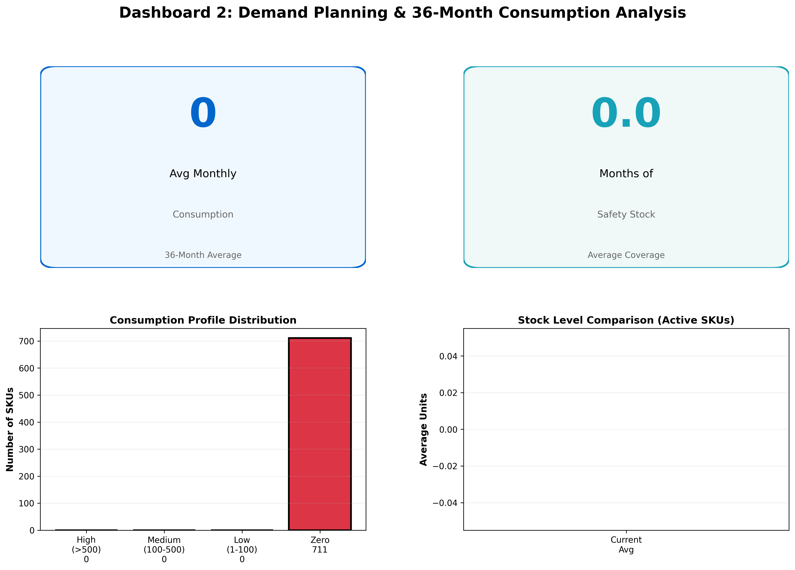

Reducing critical stock outs through demand visibility, forecasting and safety stock optimization
A critical spare parts distributor was experiencing frequent stock outs affecting customer service levels. Emergency procurement costs were high, and demand forecasting was reactive rather than proactive.
Reduce stock out rate to below 1.5% through demand forecasting, safety stock optimization and inventory replenishment planning.
Analysis revealed that 70% of stock outs occurred in fast moving items (>100 units/month) with variable demand patterns. Lead time variability of +/- 30% was not being accounted for in safety stock calculations.
Stock Out Rate: 2.0%
Emergency Orders: 45+/month
Service Level: 98%
Forecast Accuracy: Low
Safety Stock: Reactive
Stock Out Rate: 1.06%
Emergency Orders: <10/month
Service Level: 98.9%
Forecast Accuracy: High
Safety Stock: Optimized
Real time demand trends and safety stock monitoring

We can apply demand planning and safety stock optimization to reduce your stock outs and improve service levels.
Discuss Your Challenges